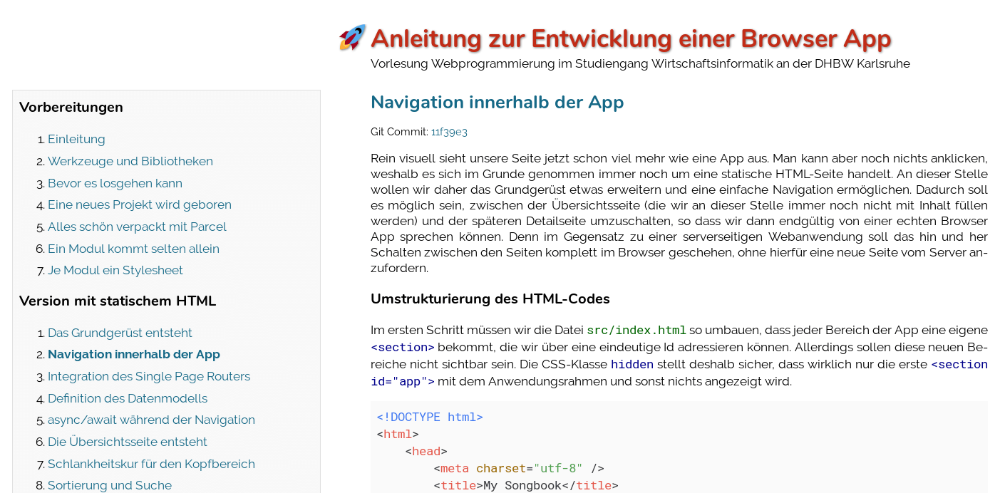

mini-tutorial.js ist ein Framework zur Erstellung einfacher Webseiten
und Onlineskripte mit einer Kapitelstruktur. Auf diese Weise können mit
wenig Aufwand ansprechende Anleitungen und buchartige Texte veröffentlicht
werden. Die auf diese Weise erstellten Unterlagen können als statische
Dateien auf einem einfachen Webserver oder einem Learning Management System
zur Verfügung gestellt werden.
